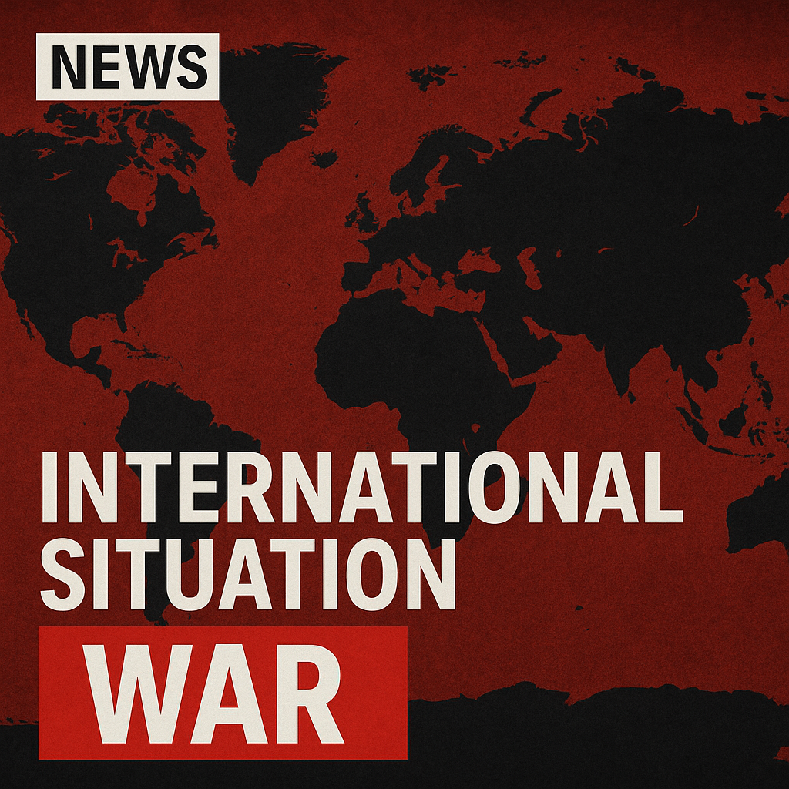

2026-03-17

# パキスタンの空爆、カブールのリハビリセンターを直撃 多数の死傷者か
---
### ① 今起きていること
月曜夜、パキスタン軍の空爆がアフガニスタン・カブールのリハビリセンターを襲い、患者らが夕食をとっていたところを直撃しました。被害の全容はまだ明らかになっていませんが、生存者の証言によれば、死傷者は数百人に上る恐れがあります。BBCが報じたところによると、現地は混乱状態にあり、救助活動が急がれています。
### ② 日本への影響
日本政府はアフガニスタン情勢を注視しており、今回の空爆は地域の安定に大きな影響を及ぼす可能性があります。日本人及び日本関係者の安全確保が最優先課題となる一方で、人道支援や難民対応の増大も懸念されます。地域の不安定化は国際社会全体の安保環境にも波及し、日本の外交・安全保障政策に影響を与えるでしょう。
### ③ 今後どうなるか
パキスタンとアフガニスタン間の緊張は高まる見込みで、追加の軍事行動や報復が懸念されます。また、米国や国連など国際社会の介入による調停努力も予想されますが、状況は流動的で地域のさらなる混乱もあり得ます。人道危機が深刻化し、難民流出やテロリズムの激化も現実的なリスクです。
### ④ 日本の対策
日本政府は、在留邦人の安全確保を最優先し、迅速な情報収集と現地政府、国際機関との連携強化に努めるべきです。加えて、被災者支援や復興支援のための支援策の拡充を検討する必要があります。外交的には、関係国との緊密な調整を継続し、地域の安定化に向けた国際的な努力に積極的に参加することが求められます。
### ⑤ なぜ起きたのか
今回の空爆は、パキスタン軍による治安維持やテロ組織掃討を目的とした軍事作戦の一環とみられますが、空爆対象の誤認や情報の不確定性、緊迫した両国間の敵対関係が背景にあります。パキスタンとアフガニスタンは長年にわたり国境線を巡る対立や武装勢力の動向をめぐって激しい緊張関係にあり、今回の事件はその延長線上にあると考えられます。
### ⑥ 未来シナリオ
最悪のケースでは、両国の衝突が拡大し、地域的な戦争状態へと発展する可能性があります。この場合、広範な人道危機と地域不安が深刻化し、国際的な介入や平和維持活動が必要になるでしょう。一方で、国際社会の調停と圧力、双方の対話努力により緊張が緩和し、和平構築への道が模索されるシナリオも存在します。日本を含む周辺諸国は、どの局面においても迅速な対応を迫られます。
---
### 参考情報
- BBC News: "Air strike hit Kabul rehab centre as patients ate dinner, survivor tells BBC"
- 国連難民高等弁務官事務所（UNHCR）報告書
- 外務省「アフガニスタン情勢に関する最新情報」
- 各国政府による南アジア情勢の分析報告書
---
（執筆者：戦争・世界情勢ニュース記者）